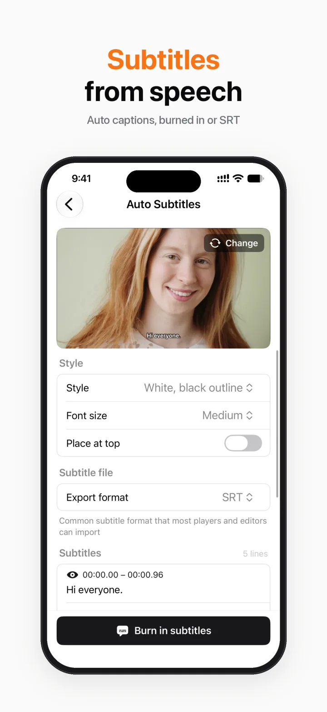
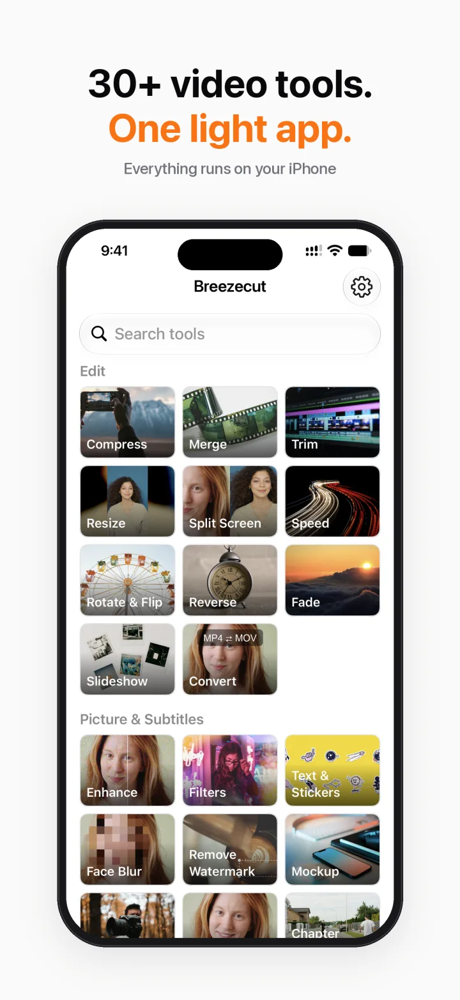
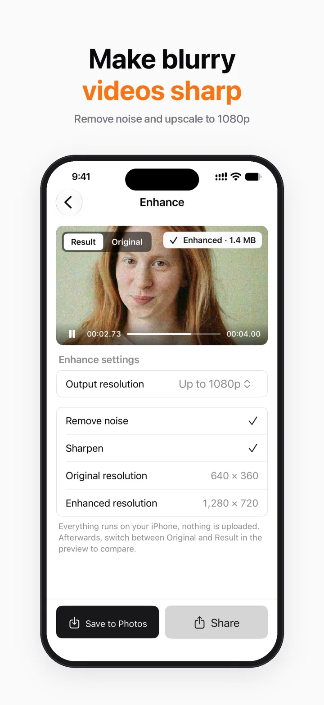
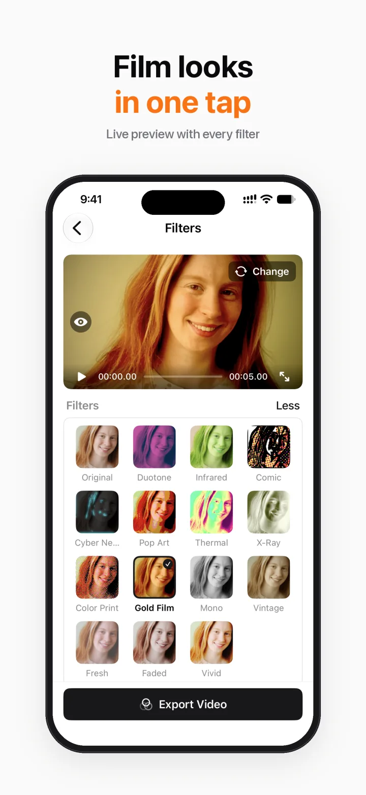
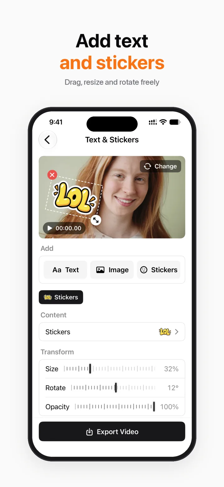
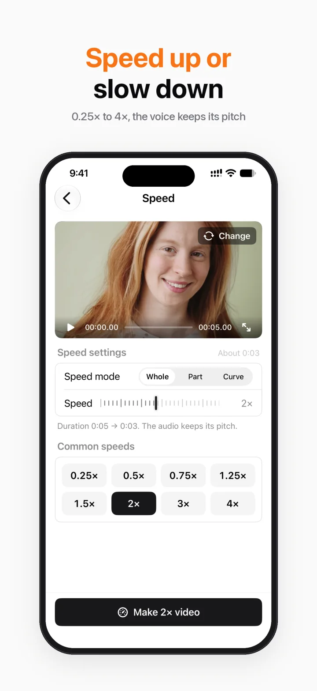
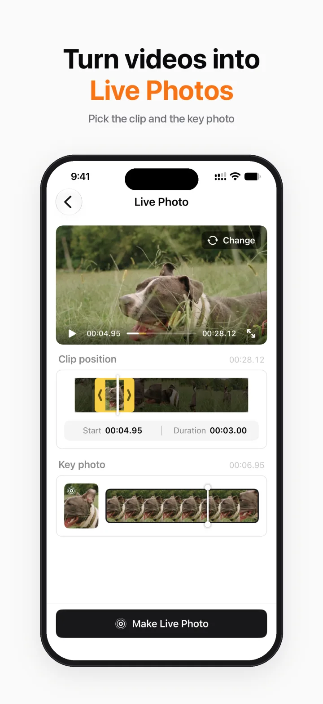
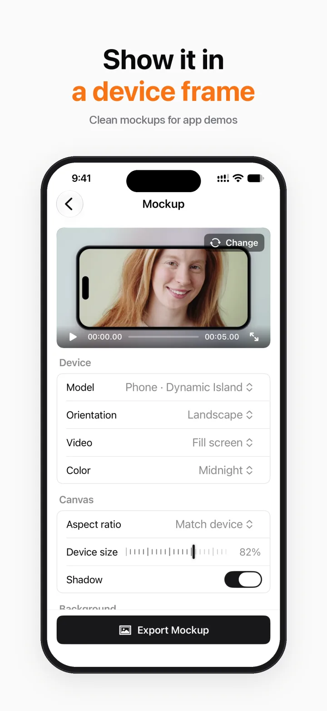
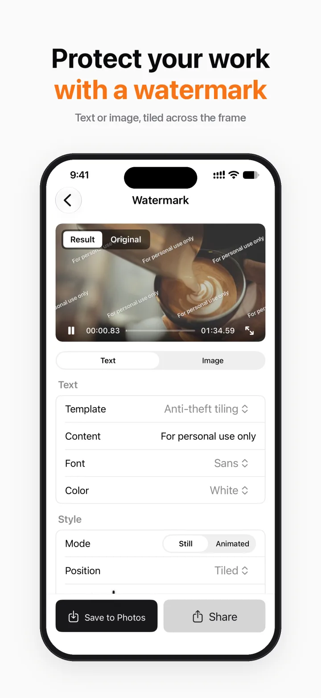

Compress & ConvertFree
HEVC / H.264 presets with before and after sizes. Convert between MP4 and MOV.
Compress, enhance, auto subtitles, face blur, resize, add music… Everything runs on your iPhone. Nothing is uploaded, nothing gets a watermark, and there are no ads.



Why Breezecut
Shrink a clip to send it, turn a landscape video vertical, caption a talking video, blur a passer-by. No need for a separate app for each.
What's inside
Every tool uses the same clean layout: pick a video, adjust a few settings, export. The preview matches the result.
HEVC / H.264 presets with before and after sizes. Convert between MP4 and MOV.
Remove noise and sharpen in one tap, upscaling up to 1080p. Uses the system's on-device AI model (needs iOS 26).
Speech to subtitles in Mandarin, Cantonese and English. Edit line by line and export SRT for free; burning into the video is Pro.
15 filter looks. Add text, images and stickers, then drag, resize and rotate each one with its own timing.
Face Blur follows faces automatically (Pro). Box a watermark or logo and cover it with blur or surrounding picture.
Put a video in a phone, tablet or laptop frame. Turn a clip into a Live Photo for a moving lock screen.
Add music with separate volume controls, extract or mute audio, make an iPhone ringtone, text to speech.
Frame-accurate trim, speed 0.25–4×, reverse, merge with transitions, 9:16 / 1:1 / 16:9 canvas. Split Screen is Pro.
Screenshots






Privacy
Breezecut has no account, no server, and no analytics or ad SDKs.
Pro
Every Pro tool can be tried once for free, so you can decide after you see it work.
Unlimited, no watermark
Each tool: 1 free try
Monthly and Yearly are auto-renewable subscriptions. Payment is charged to your Apple Account at confirmation of purchase, and renews automatically unless auto-renew is turned off at least 24 hours before the end of the current period. Manage or cancel in Settings → Apple Account → Subscriptions. Lifetime is a one-time purchase. Prices are shown in the App Store in your currency.
FAQ
The app is free to download, and most tools are free, unlimited and watermark-free. Face Blur, Device Mockup, Split Screen, Text & Stickers, Live Photo, Photo Slideshow and burning subtitles into video are Pro, each with one free try. Pro is available monthly, yearly, or as a one-time lifetime purchase.
No. Everything runs on your iPhone, including speech recognition and enhancement. There is no account and no analytics or ad SDK. The first time you recognise a language, iOS downloads its speech model itself; that step doesn't go through us.
No. Both free and Pro tools export without an app watermark, and there are no ads.
iOS 18 or later. Enhance uses a newer on-device AI model and needs iOS 26.
Mandarin, Cantonese and English. You can edit each line and export an SRT file for free. Burning the subtitles into the video is Pro.
To cancel, open Settings → Apple Account → Subscriptions on your iPhone and choose Breezecut. To restore, tap Settings at the top right of the Home screen, then Restore Purchases. Refunds are handled by Apple.